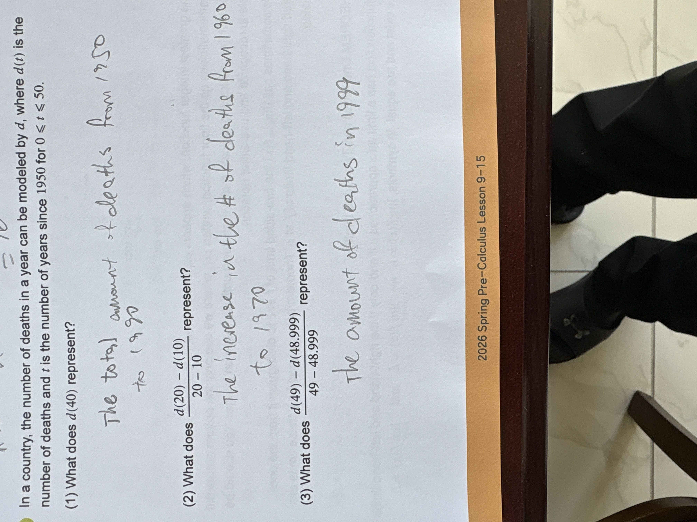

Algebra Quadratic & Polynomial Functions

In a country, the number of deaths in a year can be modeled by $d$, where $d(t)$ is the number of deaths and $t$ is the number of years since 1950 for $0 \le t \le 50$. (1) What does $d(40)$ represent? (2) What does $\frac{d(20) - d(10)}{20 - 10}$ represent? (3) What does $\frac{d(49) - d(48.999)}{49 - 48.999}$ represent?
(1) The total amount of deaths from 1950 to 1990 (2) The increase in the # of deaths from 1960 to 1970 (3) the amount of deaths in 1999
(1) The number of deaths in the year 1990. (2) The average annual rate of change of the annual death count from 1960 to 1970. (3) The instantaneous rate of change of the annual death count in the year 1999.
1. The problem defines $d(t)$ as the "number of deaths in a year," which means the function represents an annual rate. At $t = 40$ (which corresponds to 1990), $d(40)$ is the specific death count for that year alone, not a total sum since 1950. 2. The expression $\frac{d(20) - d(10)}{20 - 10}$ is the formula for the average rate of change. It tells us the average amount by which the annual death count changed each year between 1960 ($t=10$) and 1970 ($t=20$). The student's answer correctly identifies the time frame but misses that this is an average rate per year due to the division by 10. 3. The expression $\frac{d(49) - d(48.999)}{49 - 48.999}$ is a difference quotient over a very small interval, which is used to approximate the derivative $d'(49)$. This represents the instantaneous rate at which the annual death count is changing at the specific moment of 1999 ($t=49$). It is not the amount of deaths itself, but how fast that amount is currently increasing or decreasing.